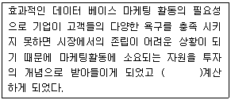
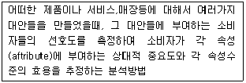
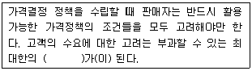
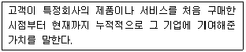
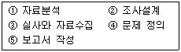
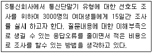
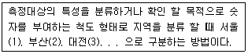
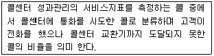
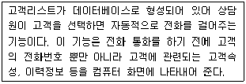

텔레마케팅관리사 (2011-03-20 기출문제)
1과목: 판매관리
1. 표적시장을 선정하기 위한 세분시장의 평가요소와 가장 거리가 먼 것은?
- 기업의 내부고객
- 기업의 목표와 재원
- 세분시장의 규모와 성장
- 세분시장의 구조적 매력성
(정답률: 60%)

2. 유통경로에 관한 설명 중 틀린 것은?
- 유통경로는 생산자로부터 소비자에게 제품이 전달되는 과정이다.
- 유통경로의 구성원들은 재화를 수송하고 저장하며, 정보를 수집한다.
- 유통경로의 길이는 중간상 수준의 수를 말한다.
- 유통경로의 서비스나 아이디어는 생산자들에게는 큰 의미가 없다.
(정답률: 81%)
3. 4P에서 자사의 제품을 적당한 장소에서 소비자가 편리하게 구매할 수 있도록 서비스 체계를 갖춘다는 의미의 요소는?
- Product
- Place
- Promotion
- Price
(정답률: 67%)
4. 제품이 소비자에 의하여 어떤 제품이라고 정의되는 방식을 의미하며, 경쟁 브 랜드에 비하여 차별적으로 받아들일 수 있도록 고객들의 마음속에 위치시키는 노력을 의미하는 것은?
- 제품 가격설정
- 제품 포지셔닝
- 제품 브랜딩
- 제품 촉진
(정답률: 94%)
5. 생산과 수요의 조건에 따른 가격전략의 형태 중 고가격 정책에 해당하는 것은?
- 수요의 가격탄력성이 크고, 대량생산으로 생산비용이 절감될 수 있는 경우
- 수용의 가격탄력성이 작고, 대량생산으로 생산비용이 절감될 수 있는 경우
- 수용의 가격탄력성이 크고, 소량다품종생산인 경우
- 수용의 가격탄력성이 작고, 소량다품종생산인 경우
(정답률: 83%)
6. 잠재고객 접촉(approach)시에 적절한 행위가 아닌 것은?
- 잠재고객의 이름, 나이, 직업 등을 미리 알아둔다.
- 잠재고객이 제품을 구입할 능력이 있는지 알아본다.
- 잠재고객의 가족 관계에 대하여 사전 지식을 갖는다.
- 판매원의 시간을 절약할 수 있도록 방문시간은 판매원이 편리한 시간으로 정한다.
(정답률: 90%)
7. 코틀러 교수의 3단계 제품수준에 해당하지 않는 것은?
- 핵심제품
- 명품제품
- 유형제품
- 포괄제품
(정답률: 87%)
8. 해피콜에 대한 설명으로 틀린 것은?
- 고객과의 관계 개선을 통해 추가판매를 유도하고 고객만족도를 높여 충성 고객화 한다.
- 감사전화, 서비스 만족확인 전화, 캠페인 지지전화 등이 이에 해당한다.
- 해피콜의 지속적인 운영관리를 위해 대상 데이터베이스를 유지하도록 한다.
- 해피콜은 소비자와의 최종 커뮤니케이션 단계로 해피콜 이후의 조치사항은 특별히 필요 없다.
(정답률: 100%)
9. 다음 ( )안에 알맞은 것은?

- 자본회수율(ROI)
- 손익분기점(BEP)
- 판매시점(POS)
- R-F-M분석
(정답률: 50%)
10. 사람들이 정보를 제공할 수 없거나 제공할 능력이 없는 경우, 마케터들은 다음 중 어떤 조사방법에 관심을 기울여야 하는가?
- 관찰
- 표적집단면접
- 대인면접
- 설문조사
(정답률: 81%)
11. "비교적 동질적인 잠재소비자들의 집합"이라는 표현은 다음 중 무엇을 가리키는가?
- 세분시장
- 인구통계적 군집
- 조직구매자
- 최종소비자
(정답률: 45%)
12. 소비자가 제품구매 후 우편으로 영수증을 비롯한 필요증명서를 기업에게 보내면 기업이 구매가격의 일정률에 해당하는 현금을 반환해주는 것을 말하는 판매촉진 수단은?
- 가격할인쿠폰
- 리베이트
- 프리미엄
- 마일리지 서비스
(정답률: 87%)
13. 다음 중 표적(Target)마케팅 전략의 과정으로 포함되지 않는 것은?
- 시장세분화
- 제품분석
- 표적시장결정
- 제품포지셔닝
(정답률: 65%)
14. 기업의 모든 구성원이 제품, 서비스, 비즈니스 프로세스의 품질을 끊임없이 향상시켜 고객만족을 달성하는 경영방식은?
- 전사적 품질관리(TQM)
- 성능품질(PQ)
- 사회적 책임(SR)
- 고객 관계 관리(CRM)
(정답률: 50%)
15. 다음이 설명하고 있는 마케팅 분석방법은?

- 군집 분석
- 요인 분석
- 컨조인트 분석
- 판별 분석
(정답률: 24%)
16. 마케팅 전략의 주체가 되는 3C에 해당되지 않는 것은?
- Converter
- Customer
- Company
- Compititor
(정답률: 62%)
17. BCG(Boston Consultion Group)의 시장 성장-점유율 매트릭스에서 시장 성장률이 높으나 점유율이 낮은 사업부를 무엇이라 하는가?
- 별(star)
- 현금젖소(cash cow)
- 의문표(question mark)
- 두뇌(Brain)
(정답률: 53%)
18. 효과적인 시장세분화의 요건으로 틀린 것은?
- 측정가능성
- 실천성
- 접근가능성
- 동일한 반응성
(정답률: 85%)
19. 일반적인 소비자의 신제품 수용단계를 순서대로 바르게 나열한 것은?
- 인지 → 시용 → 평가 → 관심 → 수용
- 인지 → 관심 → 평가 → 시용 → 수용
- 관심 → 인지 → 시용 → 평가 → 수용
- 관심 → 인지 → 평가 → 시용 → 수용
(정답률: 24%)
20. 일정수준 이상의 입지조건, 이미지, 경영능력을 가진 중간상을 선별하여 서비스를 취급할 수 있는 권한을 부여하는 경로전략을 무엇이라고 하는가?
- 독점적 유통
- 집중적 유통
- 선택적 유통
- 집약적 유통
(정답률: 58%)
21. 생산자가 대량광고와 판매촉진을 하는 소비재의 유형에 해당하는 것은?
- 편의품
- 선매품
- 전문품
- 비탐색품
(정답률: 56%)
22. 다음 ()안에 들어갈 내용으로 알맞은 것은?

- 변동비
- 원가경쟁
- 가격상한선
- 가격의 범위
(정답률: 79%)
23. 가장 일반적인 소비자의 반응 순서는?
- 흥미유발(I) → 주목(A) → 욕구(D) → 행동(A)
- 주목(A) → 흥미유발(I) → 욕구(D) → 행동(A)
- 욕구(D) → 흥미유발(I) → 주목(A) → 행동(A)
- 주목(A) → 욕구(D) →흥미유발(I) → 행동(A)
(정답률: 60%)
24. 다음 중 시장세분화의 인구 통계적 변수에 해당하지 않는 것은?
- 나이
- 종교
- 개성
- 소득
(정답률: 62%)
25. 다음은 무엇에 관한 설명인가?

- 고객생애가치
- 기업이미지
- 상품가치
- 고객기여가치
(정답률: 81%)
2과목: 시장조사
26. 시장조사의 효과 또는 필요성에 대한 설명이 아닌 것은?
- 기업 경영의 중요한 의사결정을 하는데 도움이 된다.
- 마케팅 문제해결에 필요한 정보를 신속하게 수집하여 관련 업체에 판매수단으로만 활용한다.
- 마케팅 프로그램을 효과적으로 수행 할 수 있다.
- 마케팅 문제의 예측과 진단을 위한 조사까지 수행한다.
(정답률: 73%)
27. 설문지가 완성되면 피조사자들에게 그 의미가 제대로 전달되는지,응답상의 어려움은 없는지 등의 형식적인 측면의 문제를 점검하기 위하여 조사대상자의 일부를 대상으로 본 조사 전에 실시하는 조사는?
- 표본조사
- 문헌조사
- 1차조사
- 사전조사
(정답률: 70%)
28. 전화조사 질문 Script의 기본적인 구성에 있어 바람직하지 않은 것은?
- 전화조사 대상자의 나이 및 가족구성
- 전화조사의 대상
- 전화조사의 목적
- 전화조사 주체의 소속
(정답률: 50%)
29. 마케팅조사의 초기단계의 조사로서 예비조사의 성격을 띠고 있는 탐색조사에 해당하지 않는 것은?
- 문헌조사
- 사례조사
- 유사실험조사
- 전문가의견조사
(정답률: 43%)
30. 설문지 회수율을 높이는 노력으로 적절하지 않은 것은?
- 독촉편지를 보내거나 독촉전화를 한다.
- 겉표지에 설문내용의 중요성을 부각시켜 응답자가 인식하게 한다.
- 개인 신상에 민감한 질문들을 가능한 줄인다.
- 폐쇄형 질문의 수를 가능한 줄인다.
(정답률: 17%)
31. 표본의 크기를 결정하는데 고려해야 하는 요소 중 적절하지 않은 것은?
- 비표집 오차
- 모집단 요소의 동질성
- 조사의 목적
- 모집단의 크기
(정답률: 42%)
32. 집단조사법에 관한 설명으로 틀린 것은?
- 조사의 설명이나 조건을 표준화 할 수 있다.
- 응답자가 다른 사람의 영향을 받을 가능성이 있다.
- 모집단이 클수록 조사집단이 대표성을 확보할 수 있다.
- 응답자 개인별 차이를 무시할 우려가 있어 타당성이 낮아질 수 있다.
(정답률: 47%)
33. 커뮤니케이션방법에 의한 시장 조사기법에 해당되지 않는 것은?
- 면접 조사법
- 신디케이트 조사법
- 우편 조사법
- 인터넷 조사법
(정답률: 56%)
34. 의사소통방법은 필요한 자료를 설문지나 대화를 통하여 얻는 방법을 말한다. 캠벨(Campbell)의 의사소통방법을 체계화 및 공개화에 따라 분류하였는데 공개적이고 비체계적인 소통방법은?
- 역할행동법
- 문장완성법
- 단어연상법
- 심층면접법
(정답률: 47%)
35. 다음 시장조사의 과정을 올바른 순서대로 나열한 것은?

- ④ → ② → ③ → ① → ⑤
- ① → ② → ③ → ④ → ⑤
- ② → ③ → ① → ④ → ⑤
- ④ → ① → ② → ③ → ⑤
(정답률: 58%)
36. 응답자에게 조사자가 전화를 걸어 질문하는 전화조사법의 단점으로 옳지 않은 것은?
- 시각적인 보조 자료(그림,도표)를 활용할 수 없다.
- 질문의 길이와 내용에 제한을 받는다.
- 질문 중에 응답자가 전화통화를 중단하는 경우도 있다.
- 전화보급의 보편화로 응답자에게 접근이 용이하다.
(정답률: 67%)
37. 모집단을 2개 이상의 상호배타적인 집단으로 분류하고, 각 집단 내에 무작위로 표본을 추출하는 것은?
- 할당표본추출
- 군집표본추출
- 층화표본추출
- 계통표본추출
(정답률: 18%)
38. 다음에 제시된 질문들 중 문항 작성 원칙에 위배되지 않는 것은?
- 귀하께서는 현재 근무하고 있는 회사의 조직문화와 동료 관계에 대해 만족하고 계십니까?
- 환경부에 따르면 쓰레기 분리수거를 하면 자원재활용에 상당한 도움을 줄 수 있다고 합니다. 이러한 상황을 고려 할 때 귀하는 쓰리게 분리수거를 찬성하십니까?
- 귀하께서는 작년에 제주도에 가 보신적이 있으십니까?
- 귀하는 지난 선거 때 투표하셨습니까?
(정답률: 40%)
39. 다음 설명에 가장 적합한 조사유형은?

- 면접조사
- 방문조사
- 집단설문조사
- 관찰조사
(정답률: 73%)
40. 시장조사의 유형으로 가장 바람직하지 못한 것은?
- 가설 검증
- 실태조사
- 관계자료 재검토와 고찰
- 위험을 감수하는 조사
(정답률: 64%)
41. 다음이 설명하고 있는 척도는?

- 등간척도
- 서열척도
- 비율척도
- 명목척도
(정답률: 36%)
42. 시장조사 중 제품조사에 대한 설명으로 맞는 것은?
- 브랜드 선정에서의 적정한 가격을 조사한다.
- 가격변화에 대한 반응을 조사한다.
- 적절한 제품디자인을 결정하는 조사를 한다.
- 도매 및 소매의 장악 정도를 조사한다.
(정답률: 50%)
43. 최소의 경비와 노력으로 광범위한 지역과 대상을 표본으로 삼을 수 있는 자료수집방법은?
- 면접조사법
- 관찰방법
- 우편조사법
- 전화조사법
(정답률: 60%)
44. 조사과정에서 조사원이 응답자에게 가장 영향을 많이 미칠 수 있는 조사방법은?
- 우편조사
- 인터넷조사
- ARS조사
- 설문조사
(정답률: 70%)
45. 측정에 있어 타당도와 신뢰도에 영향을 미치는 요인 중 개인적 요인과 거리가 먼 것은?
- 오자
- 직업
- 교육수준
- 연령
(정답률: 71%)
46. 4세 미만 여아들을 대상으로 선호하는 장난감 유형에 관한 조사를 시행하려 할 때 가장 적합한 조사 방법은?
- 면접조사
- 관찰조사
- 전화조사
- 설문조사
(정답률: 79%)
47. 제품수명주기(Product Life Cycle) 중 제품출시 전에 실시 할 수 있는 것은?
- 판촉기법들에 대한 조사
- 고객반응 추적 조사
- 제품 개념시험 (concept test)
- 상표/광고에 대한 인지도 및 태도조사
(정답률: 43%)
48. 표본추출법 중 확률표본추출법의 특성에 해당되는 것은?
- 시간과 비용이 적게 소요
- 인위적 표본추출
- 표본오차의 추정이 가능
- 분석결과의 일반화에 제약
(정답률: 58%)
49. 마케팅 조사 절차 중 조사계획 수립단계에 관한 사항으로 틀린 것은?
- 데이터를 분석하고, 문제점에 대한 대안을 모색한다.
- 문제점을 파악하고 이를 해결할 수 있는 방향으로 조사 목적을 설정한다.
- 필요한 정보를 얻기 위해 조사내용 전반에 대한 범위를 정한다.
- 사용가능한 조사 예산 등을 감안하여 합리적인 방법으로 조사 예산 계획을 수립한다.
(정답률: 65%)
50. 다음 중 전화설문 조사로 가장 적합한 조사 목적은?
- 그림이나 사진등을 보고 평가하는 경우
- 신상품에 대한 브랜드 인지도를 조사할 경우
- 매장에 진열되어 있는 상품 종류를 알고자 할 경우
- 복잡한 내용을 듣는다거나 앙케이트 항목이 많은 경우
(정답률: 86%)
3과목: 텔레마케팅관리
51. A회사 콜센터는 직접 고객을 상담하는 상담팀,교육을 담당하는 교육팀, 모니터링을 담당하는 QA팀, 각종 통계관리를 담당하는 운영지원팀, 그리고 시스템 관리를 담당하는 시스템 관리팀으로 구분되어 있다. 이와 같이 담당하는 업무의 성격에 따라 팀이 구분되는 조직을 무엇이라고 하는가?
- 기능별 조직
- 피라미드 조직
- 라인별 조직
- 매트릭스 조직
(정답률: 79%)
52. 다음 중 고객의 서비스 만족을 측정하기에 거리가 가장 먼 것은?
- 고객 유형
- 평균포기비율
- 평균응대시간
- 통화품질평가
(정답률: 36%)
53. 표준 작업일 상담원 실근무시간 등의 상황변수를 토대로 보다 현실적이고 실제적으로 콜센터 업무를 계획하는 것을 무엇이라고 하는가?
- 수신콜 응답률
- 콜센터 스케줄링
- 주문 획득률
- 포기콜률
(정답률: 90%)
54. 평균처리시간이 길어질 경우 생산성 관리를 위한 조치로 적합하지 않은 것은?
- 모든 상담을 ARS로만 처리한다.
- 근무 집중도가 떨어지는 이유가 있는지를 확인한다.
- 스크립트가 불충분하거나 부정확한지 확인한다.
- 적정인력의 투입 여부를 확인한다.
(정답률: 67%)
55. 텔레마케터의 교육, 훈련, 개발에 대한 설명으로 틀린 것은?
- 교육은 기초적인 직무지식(Knowledge) 배양에 초점을 두고, 이론적이고 개념적인 내용으로 구성한다.
- 훈련은 직무의 업무 기술(Skill)의 배양에 초점을 두고, 실무적인 내용으로 현재 업무기술의 결점보완 및 향상을 위해 구성한다.
- 개발은 현재와 미래의 직무수행 능력(Ability) 배양을 위해 이론과 실무를 조화시켜 미래의 직무능력 향상에 이바지 할 수 있도록 한다.
- 교육과 훈련은 개별적으로텔레마케터의 부족한 현재의 직무관련 지식과 기술 습득에 초점을 두는 것으로 장기적이며 간접적인 효과를 볼 수 있다.
(정답률: 34%)
56. 텔레마케팅 관련 용어에 대한 설명으로 옳지 않은 것은?
- IVR(Interactive Voice Response): 외부에서 전화가 걸려오면 자동으로 응답하고 서비스를 시작한다.
- VMS(Voice Mail Service): 상담원에게 메시지를 남기는 기능이다.
- ANI(Automatic Number Identification): 상담원에게 균등하게 call transfer한다.
- FMS(Fax Mail Service): 외부에서 팩스문서를 보낼 때 이를 관리하는 기능이다.
(정답률: 60%)
57. 일반적인 수퍼바이저의 주요 역할로 가장 거리가 먼 것은?
- 동기부여 및 프로모션 기획
- 상담업무 평가
- 통화품질관리
- 서비스 상담
(정답률: 70%)
58. 다음 중 콜센터의 일반적인 모니터링 프로세스의 흐름이 올바른 것은?
- 목표수립→평가항목선정→모니터링방법 및 계획수립→평가→모니터링실시→피드백 및 코칭→평가결과보고
- 목표수립→평가항목선정→모니터링방법 및 계획수립→모니터링실시→평가→피드백 및 코칭→평가결과보고
- 평가항목선정→목표설정→모니터링실시→모니터링방법 및 계획수립→평가→피드백 및 코칭→평가결과보고
- 평가항목선정→평가→목표설정→모니터링실시→모니터링방법 및 계획수립→평가→피드백 및 코칭→평가결과보고
(정답률: 56%)
59. 텔레마케터 간 통화 내용을 서로 돌려서 들어보고 평가하는 모니터링 기법은?
- 실시간 모니터링
- 역 (Reverse) 모니터링
- 동료(Peer) 모니터링
- 자가(Self) 모니터링
(정답률: 64%)
60. 텔레마케팅 성과분석 범위에 대한 설명으로 틀린 것은?
- 텔레마케터 개인의 일일 업무일지를 통하여 개인성과 분석을 한다.
- 고객명단 정리 및 일반적인 업무처리 시간은 개인성과의 총 소요 시간에서 제외한다.
- 텔레마케터의 처리능력은 시간단위별로 평가를 하는 것이 일반적이다.
- 업종이나 조직의 이익구조에 따라 다르지만 일반적으로 텔레마케터에게 부과하는 목표는 손익분기점에서 최소 15% 이상을 부여한다.
(정답률: 28%)
61. 회원가입,캠페인,이벤트 등을 실시할 때 사전에 보내진 메일을 수신한 고객에게 전화고지를 해서 개봉 촉진 또는 반응 효과를 향상시키기 위해 실시하는 것은?
- pre-call
- clod call
- pay-per-call
- handled call
(정답률: 50%)
62. 콜센터 리더로서의 역할이 아닌 것은?
- 원활한 의사소통
- 각 직무별 촉매자
- 상호신뢰감 구축
- 독재적 리더십 발휘
(정답률: 64%)
63. SMART 성과 목표 설정 항목 중 S에 해당하는 것은?
- Specific
- Special
- Speed
- Social
(정답률: 58%)
64. 다음이 설명하고 있는 것은?

- 포기율(abandoned rate)
- 응대율(response rate)
- 에러율(error rate)
- 불통율(blockage rate)
(정답률: 45%)
65. CTI(computer telephony integration)추가 기능 중 다음이 설명하고 있는 다이얼링 시스템은?

- 프리딕티브 다이얼링(predictove dialing)
- 프로그리시브 다이얼링(progressive dialing)
- 프리뷰 다이얼링(preview dialing)
- 트랜스퍼 다이얼링(transfer dialing)
(정답률: 50%)
66. 아웃바운드 텔레마케팅에 대한 설명으로 부적절한 것은?
- 스크립트에 의존하는 경향이 매우 낮다.
- 신문, 잡지, TV, DM 등을 복합적으로 활용하면 효과적이다.
- 텔레마케터의 대화진행 기술, 언어선택에 따라 판매율이 좌우된다.
- 고정고객관리에 효과적이다.
(정답률: 65%)
67. OJT의 설명으로 틀린 것은?
- OJT는 사내직업훈련이다.
- OJT 리더는 피교육자의 문제점, 건의사항을 수렴한다.
- 실무에 투입되기 전 평가결과에 대해 피드백 한다.
- 현장적응 훈련이다.
(정답률: 48%)
68. 히시-블랜차드의 리더십 상황 이론 중 리더의 행동유형에 해당하지 않는 것은?
- 지시적 리더
- 설득적 리더
- 위계적 리더
- 참여적 리더
(정답률: 40%)
69. 텔레마케팅이 기업의 마케팅 도구로서 활성화된 배경에 대한 설명으로 적합하지 않는 것은?
- 컴퓨터 및 IT기술의 발전
- 매스 마케팅의 확산
- 고객니즈의 다양화
- 기존 영업비용의 증가
(정답률: 30%)
70. 인하우스 켈레마케팅(In-House Telemarketing)이란?
- 텔레마케팅 경험이 없는 경우에 외부에 위탁하여 텔레마케팅 활동을 하는 것이다.
- 자체적으로 텔레마케팅센터를 설치하여 텔레마케팅 활동을 하는 것이다.
- 기업을 소구대상으로하여 텔레마케팅활동을 하는 것이다.
- 소비자를 대상으로 텔레마케팅 활동을 하는 것이다.
(정답률: 54%)
71. 모니터링 성공요소가 아닌 것은?
- 대표성
- 주관성
- 신뢰성
- 유용성
(정답률: 72%)
72. 다음 중 경력관리에 대한 설명으로 틀린 것은?
- 경력관리는 장기적인 계획이다.
- 적재적소, 후진양성에 필요하다.
- 능력주의와 연공주의를 절충한다.
- 조직의 목표와 개인의 목표를 일치시킨다.
(정답률: 67%)
73. 아웃바운드 콜센터에 관한 설명으로 틀린 것은?
- 아웃바운드 콜센터는 보다 더 성과 지향적이고 수익지향적이다.
- 높은 성과와 수익창출을 올릴 수 있는 전문조직체이지만 잘못 운영하면 커다란 위험에 놓일 수도 있다.
- 아웃바운드 콜센터는 기업주도형이기 때문에 고객에 대해 뚜렷한 목적을 가지고 임해야 한다.
- 아웃바운드 콜센터는 전문 텔레마케터만 갖추어져 있으면 고객에 대한 양질의 데이터는 없어도 된다.
(정답률: 75%)
74. 텔레마케터의 통화품질 평가 시 고려사항이 아닌 것은?
- 텔레마케터의 통화품질을 평가할 때는 인바운드와 아웃바운드를 구분하지 않고 텔레마케터의 개인적 품성 중심으로 평가한다.
- 인바운드 업무와 아웃바운드 업무를 중심으로 평가목적, 평가방법, 평가 체크포인트를 달리 해야 한다.
- 인바운드 텔레마케팅에서는 텔레마케터의 인성, 전화받는 태도, 음성, 발성의 진지함과 정밀성, 인내력 정도를 중심으로 평가한다.
- 아웃바운드에서는 진취적 성격, 제품 또는 서비스에 대한 전문지식의 전달, 고객설득능력, 상황대응능력을 평가 한다.
(정답률: 84%)
75. 통화품질에 대한 설명으로 거리가 먼 것은?
- 통화품질이란 기업과 고객 간에 이루어지는 통화에서 느껴지는 품질의 정도를 말한다.
- 하드웨어적인 품질과 소프트웨어적인 품질로 구분 할 수 있다.
- 콜센터의 통화에 대한 종합적인 품질의 정도를 말한다.
- 불만고객과의 의사소통 수단인 대고객 DM 활동이다.
(정답률: 50%)
4과목: 고객응대
76. 전화상담시 의사전달에 영향을 미치는 요소가 아닌 것은?
- 시각적 요소
- 청각적 요소
- 촉각적 요소
- 언어적 요소
(정답률: 58%)
77. 고객관계유지를 위한 CRM의 역할 중 틀린 것은?
- 고객 니즈 분석
- 고객평가 및 세분화
- 집단화 및 통일화
- 고객이탈 방지
(정답률: 75%)
78. 최근 사용되는 전자 커뮤니케이션의 방법 중 한번에 가장 많은 사람에게 정보를 전달 할 수 있는 수단은?
- 팩스
- 전화
- Q&A
- 이메일
(정답률: 55%)
79. 인바운드 콜 상담기법에 대한 설명으로 바람직하지 않은 것은?
- 상대방의 말을 막지 않는다.
- 상대방의 민감한 부분이나 콤플렉스는 대화에서 제외 한다.
- “언제나” , “반드시” 와 같은 정확하고 단호한 표현을 지속적으로 사용하여 고객에게 신뢰를 준다.
- 지나치게 과장된 정서표현은 삼가 한다.
(정답률: 83%)
80. 우수한 고객응대를 통한 기업의 이득이 아닌 것은?
- 고객만족과 직원만족
- 고객의 재구매
- 경쟁기업의 성장
- 기업에 대한 긍정적 이미지 형성
(정답률: 62%)
81. 단호한 성향을 가진 고객의 특징에 대한 설명으로 틀린 것은?
- 매우 구체적이며, 직접적으로 질의 한다.
- 듣기보다는 말하기를 많이 한다.
- 권력 등을 상징적으로 사용하기도 한다.
- 인내를 할 수 있는 마음가짐을 갖고 있다.
(정답률: 25%)
82. 개방형 질문에 관한 설명으로 가장 적합한 것은?
- Yes/No 답변을 유도 할 수 있다.
- 상담원이 유도하는 방향으로 고객을 리드하는 것이 용이 하다.
- 전체 상담시간 조절이 용이하다.
- 고객 상황에 대한 명확한 이해가 용이하다.
(정답률: 58%)
83. 고객을 가치관점에서 해석 할 때 해당되지 않는 것은?
- 내부고객
- 창조고객
- 미래고객
- 최종고객
(정답률: 30%)
84. CRM의 등장배경이 된 마케팅역할의 변화 현상 중 틀린 것은?
- 규모의 경제 지향
- 다중채널 지향
- 고객점유율 지향
- 일대일 지향
(정답률: 14%)
85. 고객지향마케팅에 대한 설명으로 옳은 것은?
- 상품의 시장 점유율을 중심으로 마케팅 전략을 수립한다.
- 상품의 특징 및 장점 등을 중심으로 마케팅 전략을 수립 한다.
- 고객서비스 중심으로만 마케팅 전략을 수립한다.
- 고객이 의사결정의 기준이 되고, 고객관점에서 마케팅 전략을 수립한다.
(정답률: 72%)
86. 양방향 의사소통의 조건에 해당하지 않는 것은?
- 의사소통을 일으키는 발신자가 있어야 한다.
- 발신된 메시지를 받아들이는 수신자가 있어야 한다.
- 발송자와 수신자 사이에 의사소통이 일어나는 통로가 있어야 한다.
- 말하기와 쓰기가 이루어 질 수 있는 환경이 있어야 한다
(정답률: 64%)
87. 성공적인 인바운드 상담을 위한 기술에 관한 설명으로 옳은 것은?
- 고객의 언어적 표현뿐 아니라 억양과 속도를 고려하여 고객의 요구를 잘 파악하도록 한다.
- 상담을 할 때 고객에 대한 신뢰감을 높이기 위해 전문적인 용어로 고객을 설득한다.
- 고객과 직접 만나는 상황이 아니란 점을 크게 인식할 필요가 없다.
- 고객과 친밀감을 조성해야 하므로 간결한 말투를 사용하는 것은 피한다.
(정답률: 66%)
88. 고객이 기업과 만나는 모든 것에서 기업에 대한 고객의 경험과 인지에 영향을 미치는 “결정적인 순간”을 의미하는 것은?
- CRM(Customer Relationship Management)
- MOT(Moments of Truth)
- MIS(Marketing Information System)
- CSM(Customer Satisfation Management)
(정답률: 65%)
89. 고객응대의 질을 향상시키기 위해 상담자가 가져야 할 핵심 요소와 가장 거리가 먼 것은?
- 긍정적인 태도와 적극성
- 비판적인 사고와 분석력
- 신뢰성과 고객존중
- 창의력과 원만한 대인관계
(정답률: 70%)
90. 고객 상담 처리 기술에 대한 설명으로 옳지 않은 것은?
- 고객에 대한 다양한 정보를 얻기 위해서는 폐쇄형 질문을 한다.
- 고객이 말하기를 시작하면 경청하도록 한다.
- 고객에게 상품의 특징과 이점에 대해 설명한다.
- 고객의 반론에 대해서는 먼저 공감하는 자세를 취한다.
(정답률: 80%)
91. 고객생애가치에 관한 설명으로 옳은 것은?
- 처음으로 자사 제품 또는 서비스를 구입한 때부터 고객이 사망하는 시점까지의 기간이다.
- 특정 회사의 제품 또는 서비스를 처음 구매하거나 요청한 기간이다.
- 특정 회사의 제품 또는 서비스를 구매한 날로부터 최종 반품처리한 날까지의 기간이다.
- 한 고객이 한 기업의 고객으로 존재하는 전체기간 동안 기업에게 제공할 것으로 추정되는 재무적인 공헌도의 합계라고 할 수 있다.
(정답률: 48%)
92. 비언어적 의사소통에서 사람이 무의식적으로 다른 사람과 상호작용을 할 때 사용하는 영역에 대한 설명으로 틀린 것은?
- 친밀한 거리의 영역은 연인이나 가까운 친구, 부모에게 안겨있는 어린아이 사이에서 찾아 볼 수 있다.
- 개인적 거리의 영역은 파티에서 편안하게 이야기 할 수 있고 파트너와 쉽게 접촉할 수 있는 거리이다.
- 대중적 거리의 영역은 접촉이 없이 비교적 사적인 이야기들을 주고 받을 수 있는 절친한 직장동료 사이의 관계 이다.
- 사회적 거리의 영역은 소비자나 서비스를 제공하는 사람에게 이야기할 때와 같이 주로 대인업무를 수행할 때 사용된다.
(정답률: 53%)
93. 기업의 입장에서 고객 상담의 필요성이 아닌 것은?
- 고객에게 기업의 좋은 이미지를 구축한다.
- 제품구매 후 불만고객에게 신속히 피해보상을 함으로 더 좋은 고객관계를 형성 할 수 있다.
- 고객 불만에 대한 신속한 상담처리로 매출감소 현상이 심해진다.
- 고객지향적 마케팅활동을 추진한다.
(정답률: 74%)
94. 다음 중 CRM의 등장 배경과 거리가 먼 것은?
- IT 기술의 발전
- 시장의 규제 강화
- 매스마케팅의 비효율성
- 고객의 기대 및 요구의 다양화
(정답률: 48%)
95. 고객생애가치를 평가하기 위해 필요한 세부 구성요소가 아닌 것은?
- 할인율
- 공헌마진
- 마케팅비용
- 고객추천가치
(정답률: 27%)
96. 불만족한 고객과 상담시 적합한 응대 요령이 아닌 것은?
- 고객이 만족할 수 있는 방법을 제시한다.
- 고객의 기분을 충분히 배려한다.
- 고객의 말에 공감을 하면서 적극적인 경청을 한다.
- 고객과 상담시 폐쇄형 질문을 한다.
(정답률: 60%)
97. 고객에게 제품이나 서비스를 설명하는 방법으로 틀린 것은?
- 고객의 상황을 파악해가면서 정확하게 핵심을 전달한다.
- 전달하고자 하는 주요 내용을 명확하게 설명한다.
- 구체적으로 정확한 수치나 관련 사례를 들어가며 설명한다.
- 제품이나 서비스의 특성을 전문용어로 사용하여 설명한다.
(정답률: 64%)
98. Oliver(1996)가 제시한 고객만족의 구성요인이 아닌 것은?
- 소비상황의 만족
- 과정의 만족
- 지각차원의 만족
- 결과의 만족
(정답률: 24%)
99. 고객에게 긍정적인 이미지를 심어주기 위한 텔레마케터의 능력과 관련이 없는 것은?
- 자신감
- 전문성
- 신뢰감
- 우월감
(정답률: 84%)
100. 고객으로부터 중대한 불평이나 불만상황이 발생하였을 때 응대방법으로 옳지 않은 것은?
- 고객의 불만 정도나 깊이를 파악한다.
- 상급자나 불만사항과 관련된 부서에 연락하여 고객불만을 최소화 시킨다.
- 처리하기 어려운 불만이나 긴박한 상황이 발생하더라도 직접 방문은 하지 않는다.
- 추후 전화를 걸어 그 당시의 불만을 다시 사과한다.
(정답률: 74%)